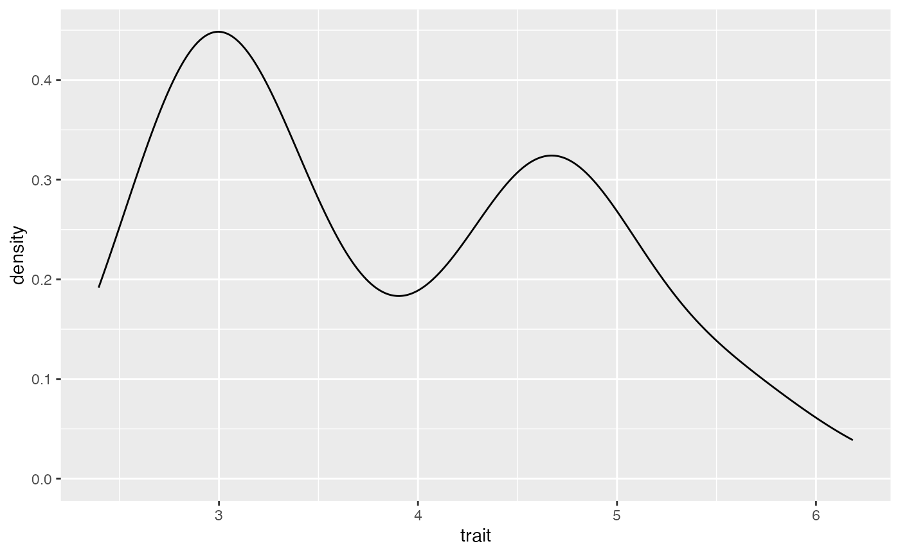
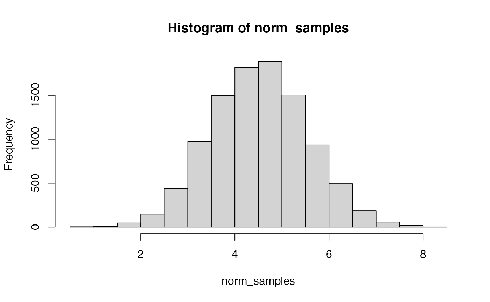

Simulations
Simulation.RmdOverview
This tutorial introduces the basic principles of simulations. The goal of simulations is multifold, as we covered in the paper. Today, we’ll begin with the goal of assessing the fit between data generated from a model and data by answering the following question: Could the model we’ve assumed plausibly have produced the data we observed?
Let’s start with a very simple example. We’re going to try and model a trait that differs between female and male animals.
Introduction
A good statistical model captures important features of observed data using relatively simple mathematical principles. However, a model that fails to capture some important feature of the data can mislead us. Therefore, it is important to not only compare the relative performance of models (i.e., model selection), but also to test the absolute fit of the best model (Bollback 2002; Brown 2014b, 2014a; Höhna et al. 2018; Brown and Thomson 2018). If the best available model could not have plausibly produced our observed data, we should be cautious in interpreting conclusions based on that model. If the simulated data are similar to the observed, the model could reasonably have produced our observations. However, if the simulated data consistently differ from the observed, the model is not capturing some feature of the data-generating process.
An Example
Here, we will examine a hypothetical dataset of trait values sampled from a sexually dimorphic population. However, for the purposes of our tutorial, we will say that we do not yet realize that sexual dimorphism exists. This example is discussed further in (Brown and Thomson 2018).
 A set of trait values
sampled from a population with sexual dimorphism.
A set of trait values
sampled from a population with sexual dimorphism.
A Single-Normal Model
Let’s take a look at our observed trait data.
## ── Attaching packages ─────────────────────────────────────── tidyverse 1.3.1 ──## ✔ ggplot2 3.3.6 ✔ purrr 0.3.4
## ✔ tibble 3.1.8 ✔ dplyr 1.0.10
## ✔ tidyr 1.2.0 ✔ stringr 1.4.0
## ✔ readr 2.1.2 ✔ forcats 0.5.1## Warning: package 'tidyr' was built under R version 4.0.5## Warning: package 'readr' was built under R version 4.0.5## ── Conflicts ────────────────────────────────────────── tidyverse_conflicts() ──
## ✖ dplyr::filter() masks stats::filter()
## ✖ dplyr::lag() masks stats::lag()
birds <- read_csv("../data/birds.csv")## Rows: 100 Columns: 1## ── Column specification ────────────────────────────────────────────────────────
## Delimiter: ","
## dbl (1): trait
##
## ℹ Use `spec()` to retrieve the full column specification for this data.
## ℹ Specify the column types or set `show_col_types = FALSE` to quiet this message.
ggplot(data = birds, mapping = aes(x=trait)) + geom_density()
Discuss with a partner
- What do you immediately notice about these data?
#ANSWER here. Describe the data This is a normal distribution. Do the data look normal?
#ANSWER here Samples from the
posterior distribution of the mean and standard deviation for a single
Normal distribution.
Samples from the
posterior distribution of the mean and standard deviation for a single
Normal distribution.
Based on one set of sampled parameter values (one of the dots in Figure 2), Figure 3 shows the resulting Normal distribution compared to the population trait data:

A single Normal distribution fit to the population trait values (based on one draw of the mean and standard deviation sampled during MCMC).
In this case, it is visually obvious that there are some important differences between the normal model we’ve assumed and the trait data. However, we’d like a quantitative method to assess this fit. Also, in the case of more complicated models and data like we typically encounter in phylogenetics, visual comparisons are often not possible.
Simulation
Let’s compare our values to a normal distribution. Above, we read in our data, and then generated 1000 samples from a normal. We can actually test if data come from a specific distribution using a test that we call the Kolmogorov–Smirnov test. This test will ask “What is the probability that these two sets of samples were drawn from the same (but unknown) probability distribution?” In our case, we do know one distribution - we just drew from a normal. If you were comparing two samples, you would not know this.
ks.test(x = birds, y = norm_samples) ##
## Two-sample Kolmogorov-Smirnov test
##
## data: birds and norm_samples
## D = 0.3384, p-value = 2.837e-10
## alternative hypothesis: two-sidedIn this example, we give the ks.test x, our vector of
observed bird traits. We also give it y, the distribution we’d like to
test. In this case, we are interested in if this comes from a normal
distribution.
For the KS-test, we are trying to reject the null hypothesis, which is that the samples come from the same distribution. Because we have a significant P-value, we reject the null. We have evidence that these values are not drawn from a normal distribution.
As is shown on the below figure, we are sampling from a single normal. This is generating a normal distribution between our two peaks, rather than a two normals, each on one of our peaks.

Simulation of posterior predictive datasets (shown in light gray) by drawing samples of means and standard deviations from the posterior distribution.
Two Normal
It’s perhaps unsurprising that our data are poorly-described by a single normal distribution, given that they do not appear normally-distributed. Is it possible for us to compare the data we have to two normal distributions?
Yes, it is! This is possible via mixture modeling. Mixture modeling refers to a situation where we have two or more different distributions underlying the data, but we may not know a priori which observation is from which. These are a commonly used class of models in ecology, evolution and behavior for their flexibility. One of the most common examples is Gamma-distributed rate variation in phylogenetics, in which characters in an alignment are classified based on how fast the characters evolve.
First, we’ll install the mixtools R package.
install.packages("mixtools")
library(mixtools)Next, we’ll use the rnormmix function to simulate data
with two normal distributions. We want 1000 samples. For the other three
variables, you’re going to have to make some choices. Lambda represents
what proportion of the sample belongs to each distribution. Lambdas are
the means of the two distributions, and sigmas are the standard
deviations. Take a look at the plot we made of the data before and see
if you can eyeball some reasonable values for this.
Once you have your samples, take a quick peak at them:
hist(mx_norm)Do they look like the real data? Let’s test that:
ks.test(birds, mx_norm)Can you reject the null that these data were drawn from the dual normal?